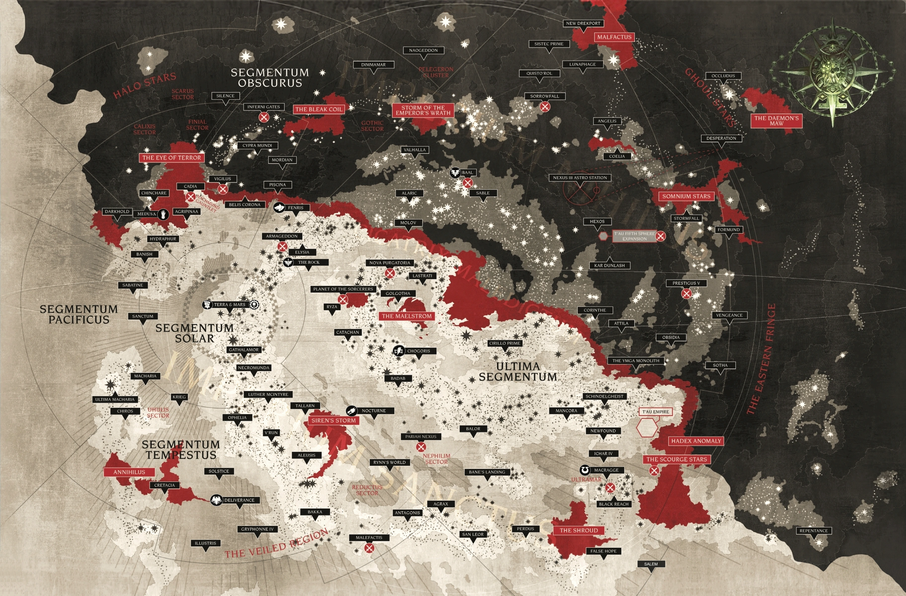

Czym jest WARHAMMER 40000?
Warhammer 40k to franczyza stworzona przez firmę Games Workshop. Jej fabuła umiejscowiona jest w naszej galaktyce, w dalekiej, mrocznej i ponurej rzeczywistości.
Warhammer to m.in. stołowa gra figurkowa (czyli to, od czego się zaczeło), książki, nowele, opowiadania, audiobooki, komiksy, RPG-i i Gry komputerowe.
Zatem co takiego ciekawego jest w Warhammerze 40k?
SETTING
Jak wcześniej wspomniane, fabuła Warhammera 40k rozgrywa się w 40 milenium. Cała Droga Mleczna progrązona jest w nieustannej wojnie.
Wszystkie żyjące rasy mędzy soba walczą, jednocześnie próbując się uporać z siłami Chaosu z Osnowy, równoległego wszechświata stworzonego z uczuć, emocji i dusz, i żarłocznymi najeźdźcami spoza galaktyki.

Jak się wkręcić w warhammera?
Ogólnie, jak w tytule, potzrebujesz około 40000 zł. Mówie serio. Zobaczcie ile kosztują te figurki. Jeżeli wolisz samo czytanie lore, to nadal słono zaplacisz. Obecnie sama Herezja Horacego (Horusa), czyli prequel do warhammera 40k, ma ponad 64 indywidualne książki. Oczywiśćie nie musisz czytać wszystkiego, żeby się dobrze bawić. Dla laików tematu, którzy chca posmakować choć troche klimatu warhammera, polecałbym gry z tego świata oraz przeróżne kanały lore na jutubie.
HEREZJA HORACEGO
Jest to jedna z głównych serii książek, będąca prequelem (choć moglibyśmy z lore iść aż do Wojny w Niebiosach, ale to temat na iiny dzień) obecnych wydarzeń.
Opisuje przebieg wojny domowej w Imperium Ludzkości, wywołanej tym, że Horus był zazdrościł swojemu ojcu pełnej, długiej grzywy podczas gdy on sam miał już zakola jak Zatoka Perska. (Powiedzmy)
Opisuje całą historię, od przekabacenia Horacego na stronę Chaosu aż po umieszczenie Imperatora na Złotym Tronie Terry
Poniżej prosty wykres przedstawiający kolejność fabularną materiałów z Herezji: